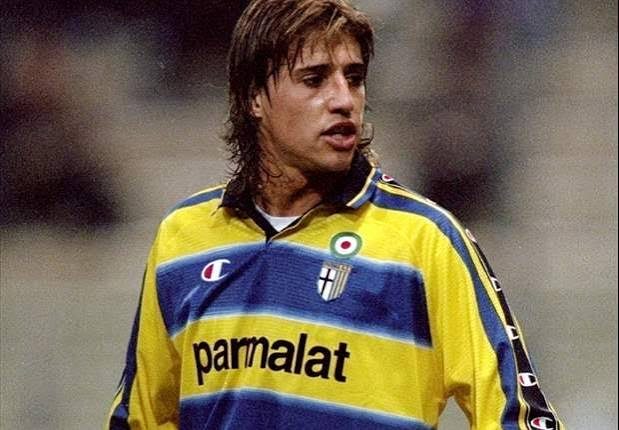
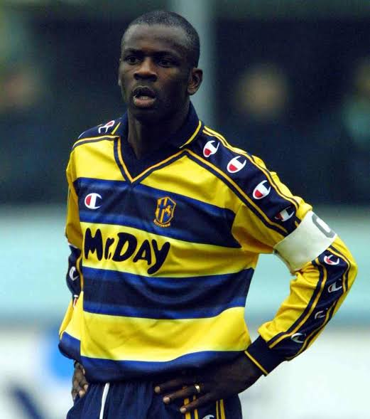

Il club
Fondato nel 1913, il Parma è una delle società più importanti del calcio italiano degli anni Novanta. La maglia gialloblù è diventata un simbolo di quell'epoca grazie a una generazione di campioni capace di conquistare trofei nazionali ed europei.
Tra il 1992 e il 1999 il Parma ha costruito il periodo più glorioso della propria storia, vincendo tre Coppe Italia, una Coppa delle Coppe, due Coppe UEFA, una Supercoppa Italiana e una Supercoppa UEFA.
Dopo il fallimento del 2015 e la ripartenza dalla Serie D, il club ha completato una storica scalata in tre anni, tornando dalla quarta serie alla Serie A nel 2018.
Palmarès


Rosa 2026/27
Portieri


Difensori


Centrocampisti


Attaccanti


Allenatore

Carlos Cuesta
Tecnico spagnolo classe 1995, Cuesta guida il Parma nel progetto basato sulla valorizzazione dei giovani. Confermato per la stagione 2026/27, è tra gli allenatori più giovani della Serie A.
Mercato 2026/27
Arrivi
- Giovanni Daffara Juventus Next Gen · definitivo
- El Bilal Touré Atalanta · prestito
- José David Romero Tigre · definitivo
- Thomas De Martis Lanús · definitivo
- Benjamin Cremaschi Inter Miami · definitivo
- Hans Nicolussi Caviglia Venezia · definitivo
- Franco Carboni Inter · definitivo
- Ousmane Diallo Borussia Dortmund · definitivo
- Simone Lontani Milan Futuro · definitivo
- Fabio Fabbian Fiorentina · prestito
- Diego Carlos Fenerbahçe · prestito
- Daniele Ghidotti Sampdoria · definitivo
Uscite
- Zion Suzuki Aston Villa · definitivo
- Alessandro Circati Benfica · definitivo
- Mateo Pellegrino Fiorentina · definitivo
- Jacob Ondrejka Groningen · prestito
- Adrian Benedyczak Kasimpasa · prestito
- Antoine Joujou Nantes · definitivo
- Valentin Mihăilă —
- Drissa Camara —
- Stanko Jurić —
- Adrian Estevez Palermo · svincolato
- Rachid Kouda Mantova · prestito
- Oliver Sørensen Celtic · prestito
- Antonio Colak —
Leggende

Gianfranco Zola
Uno dei simboli del Parma degli anni Novanta. Con la maglia gialloblù conquistò Coppa Italia, Coppa UEFA e Supercoppa UEFA.

Hernán Crespo
Il centravanti argentino è stato uno dei grandi protagonisti della generazione d'oro del Parma, diventando uno dei bomber più prolifici della storia del club.

Roberto Mancini
Tra i grandi campioni passati dal Parma nella sua epoca più prestigiosa, contribuì alla squadra nella stagione 2000/01.

Lilian Thuram
Difensore simbolo del Parma europeo di fine anni Novanta, protagonista della vittoria della Coppa UEFA 1999 e della Coppa Italia dello stesso anno.
Storia
Nasce il Parma
Il club viene fondato nel dicembre 1913, dando origine alla storia della squadra gialloblù.
La prima Serie B
Il Parma conquista per la prima volta la promozione in Serie B.
La Serie A
Il Parma raggiunge per la prima volta nella sua storia la Serie A, iniziando il percorso che porterà alla sua epoca più gloriosa.
La prima Coppa Italia
Il Parma conquista il primo grande trofeo della propria storia battendo la Juventus nella finale di Coppa Italia.
L'Europa
Arriva la Coppa delle Coppe, conquistata a Wembley contro l'Anversa. Nello stesso anno il Parma vince anche la Supercoppa UEFA.
La prima Coppa UEFA
Il Parma supera la Juventus nella finale tutta italiana e conquista la sua prima Coppa UEFA.
L'ultima grande notte europea
Il Parma vince la Coppa UEFA a Mosca contro il Marsiglia, completando uno dei cicli più vincenti nella storia del calcio italiano.
La terza Coppa Italia
Il Parma conquista la terza Coppa Italia della propria storia, battendo la Juventus nella doppia finale.
Il fallimento
Il Parma viene dichiarato fallito e riparte dalla Serie D con una nuova società, il Parma Calcio 1913.
La scalata
Il Parma realizza tre promozioni consecutive, passando dalla Serie D alla Serie A in appena tre stagioni.
Il ritorno in Serie A
Il Parma vince la Serie B 2023/24 e torna nella massima categoria italiana dopo tre stagioni.
Una nuova generazione
Il Parma continua il proprio progetto basato sui giovani. Carlos Cuesta viene confermato per la stagione 2026/27, mentre la rosa viene profondamente rinnovata.